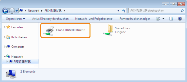

|
|
|
|---|
|
Abhilfe
|
Registrieren Sie den Benutzer des zu verwendenden Computers, oder geben Sie das Passwort auf dem Druckserver an.
Nähere Informationen erhalten Sie von Ihrem Netzwerkadministrator.
|
|
Abhilfe 1
|
Überprüfen Sie die Drucker auf dem Druckserver.

Wenn das Symbol für diesen Drucker nicht angezeigt wird
Wenden Sie sich mit diesem Problem an Ihren Netzwerkadministrator.
Wenn das Symbol für diesen Drucker angezeigt wird
Sie können den Druckertreiber installieren, indem Sie eines der folgenden Verfahren durchführen und den Anleitungen im Dialog folgen.
Doppelklicken auf das Symbol für diesen Drucker
Ziehen und Ablegen des Symbols für diesen Drucker im Druckerordner
|
|
Abhilfe 2
|
Wenn Sie den Netzwerkpfad direkt angeben möchten, überprüfen Sie, ob der Netzwerkpfad mit "\\Druckservername (der Computername des Druckservers)\Druckername" korrekt angegeben ist.
|